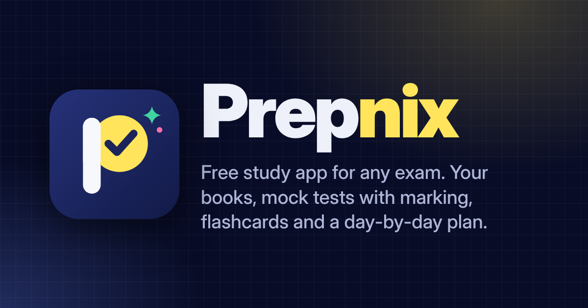

~0
Financial statement assignments
Prepared and finalised alongside the audit team.
Hyderabad--:--
Open for industrial training · January 2027
Ability card
Real files, real clients, real deadlines — in my first year of articleship.
~0
Prepared and finalised alongside the audit team.
₹0 Cr
Financial projections built for a business of this size.
₹0 Cr
Foreign-exchange gain reconciled line by line.
₹0 Cr
Ledgers and tax figures reconciled until they tied out.
0
From a GST desk in the browser to a desktop accounting app.
0
CA Intermediate and CMA Intermediate, both groups each.
Turnover figures show the size of the clients I worked on, not revenue I earned.
Where the numbers get questioned
Compliance without loose ends
From trial balance to the bank's desk
Six tools, each born from a real problem
My story
Next · January 2027
01 / 05
Jan 2027 — next
Open to offers · Bengaluru or Hyderabad
Looking for FP&A, corporate finance, risk management, investment banking or internal audit — a team where finance discipline and automation both count.
2026
Self-driven
GST Return Desk, Lekhora, ForgeMind, Prepnix, CA Career Desk and Personal AI. I define the problem, design the workflow, direct AI coding tools and test every version.
Dec 2025 — now
Rajsekhara & Associates, Hyderabad
Financial statements for ~30 assignments, audit support, GST, TDS and payroll reconciliations, CMA data and financial projections — for real clients, on real deadlines.
2025
ICAI · ICMAI — both groups each
Two professional qualifications in one year: auditing, taxation, costing, financial management and law.
2024
ICAI · 61.25%
The foundation: accounting, business law and quantitative thinking.
Four habits I bring to every file — the same ones a reviewer looks for.
Before touching a ledger I learn what the client sells, who pays them and where the cash goes. Numbers make sense faster that way.
Books against GST returns, TDS against Form 26AS, ledgers against bank. A difference gets a reason, not a plug.
Working papers that show the source, the working and the conclusion — so a partner can review in minutes.
When a task comes back every month, I build a tool for it. That is how my six AI-assisted tools started.
Available for industrial training
I bring an auditor's eye for detail and a builder's habit of making slow work faster. Write to me — I reply within a day.
Room 1
Every figure has to be backed by evidence. During articleship at Rajsekhara & Associates I support statutory audits — testing, tracing and tying numbers back to source.
What I do
Vouching, ledger scrutiny and verification across client engagements, documented in working papers a reviewer can follow.
What I do
Ledger, tax and bank reconciliations until every difference is explained — the habit that makes an audit hold.
Scale
Entity turnover in a ledger and tax reconciliation assignment I worked on.
Figures show the size of client assignments I contributed to — not portfolios I managed. Client names stay confidential.
Room 2
Compliance is where small errors get expensive. I reconcile what the books say with what the returns say — and I build tools so the next month is faster.
What I do
Books against returns, invoice by invoice, until the differences are explained.
What I do
TDS and payroll reconciliations that keep deductions, deposits and returns in line.
Built for it
My Chrome extension that takes the repetition out of invoice intake, return preparation and reconciliation support.
Room 3
From the trial balance to the bank's desk: financial statements, CMA data and projections that lenders and owners can rely on.
financial statement assignments
client turnover in financial projections work
exporter turnover in a foreign-exchange gain reconciliation
Tools: Excel, Tally and Zoho Books. Figures show the size of client assignments I contributed to — not revenue I generated.
Room 4
I don't just use tools — I build them. I define the problem, design the workflow, direct AI coding tools and test every version.
Chrome extension · finance
Invoice intake, return preparation and reconciliation support, right in the browser.
Working prototype, tested by me — not yet independently certified.
Windows app · accounting
Bank statements, GST and TDS data turned into organised accounting inputs.
Working prototype with an installer.
idea → plan → build → testAI software studio
Turns an app idea into a working, tested application, step by step with AI.
In active development, with automated tests.

Web app · education
Structured practice, revision and planning for exam preparation.
Built as a website project.
Chrome extension · careers
Finds relevant training and job openings and keeps applications organised.
Prototype.
Python desktop app
A private assistant that runs on the laptop — it talks, listens and remembers.
Experimental.